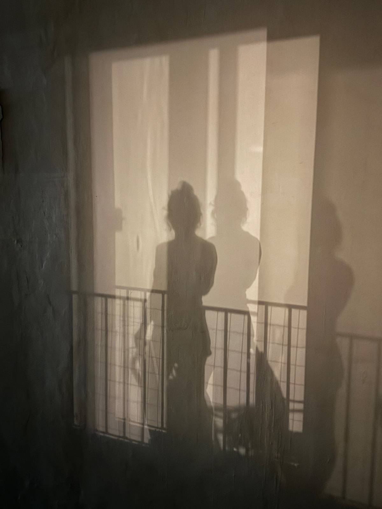

numerología
Los informes
Cinco formas distintas de mirarte, complementarias entre sí. Podés empezar por cualquiera.
Cada uno se arma con tu nombre completo y tu fecha de nacimiento. A partir de esos datos, la numerología funciona como un lenguaje para nombrar lo que se siente pero todavía no se entiende: los patrones que se repiten, las cualidades que tenés pero no usás, las partes de vos que aprendiste a esconder porque en algún momento no fue seguro mostrarlas.
Es información, no un veredicto. Un lugar al que volver en distintos momentos, porque lo que encontrás ahí puede no cambiar, pero la forma en que lo comprendés y lo mirás sí.

Tocá cada uno para leerlo en detalle
{{ inf.keyword }}
{{ inf.subname }}
{{ inf.resumen }}
{{ inf.toggleLabel }}se vuelve a empezar muchas veces,pero nunca es desde cero
cómo hacerlo
Pedí tu informe
{{ paso.titulo }}
{{ paso.texto }}

Gracias. Recibí tus datos.
Te voy a escribir por mail para coordinar el pago. Una vez confirmado, en 48 horas tenés tu informe personalizado, en formato digital.
somosseres cambiantes
Prácticas posibles
Maneras de habitarlo, sin apuro
No hay una forma correcta de leerlo. Estas son posibilidades. Tomá las que te sirvan, dejá el resto.
Sin apuro
Leé el informe con calma, tomándote tu tiempo, y volvé a él tantas veces como lo necesités.
Observate
Marcá lo que hoy te representa, lo que aún no se manifiesta, lo que sentís que ya estás trabajando. Todo eso es información válida.
Registrá
Llevá una bitácora donde anotes tus sensaciones y reflexiones a lo largo del tiempo. Vas a ver que, aunque los números no cambien, tu comprensión sí.
Dejá decantar
Cada persona tiene sus propios tiempos, y este es tu proceso. Vivilo sin presión, sin querer resolverlo todo de una vez.